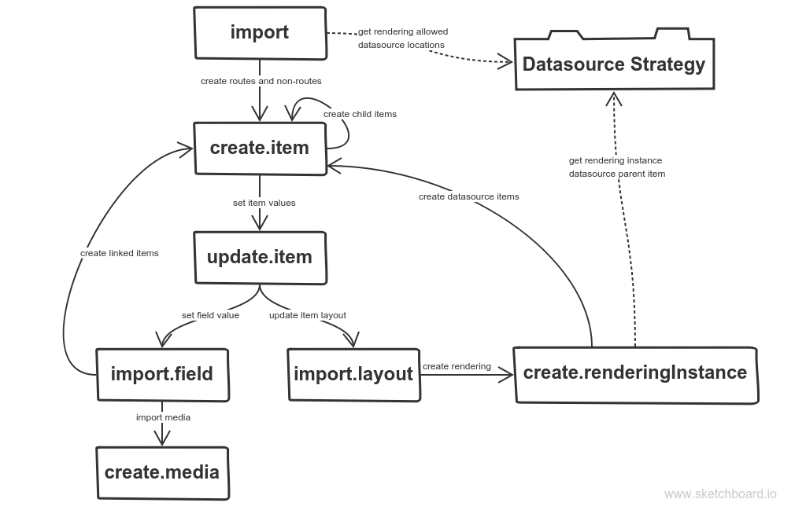

Pipelines used in the JSS code-first import process
Description of pipelines and processors used in the JSS code-first import process
The import process uses a series of pipelines in the javaScriptServices group that create templates, layouts, media, and content items based on the data in the JSS Manifest file.
Pipelines are configured in \App_Config\Sitecore\JavaScriptServices\Sitecore.JavaScriptServices.AppServices.config. To make any adjustments to the pipelines, use a configuration patch.
The following diagram shows the sequence of pipelines used in the import process:
|  |
The import process uses the following pipelines:
Pipeline | Description |
|---|---|
| The primary pipeline for the import process. It initializes the context for the import, creates template and layout items, and triggers the creation of content item pipelines. |
| Finds or creates a content item. |
| Populates or updates field values on a content item, triggers the update of item layout. |
| Imports the value of a field on a content item. |
| Creates a media item from an asset associated with the manifest. |
| Populates the layout of an imported item. |
| Creates a rendering instance for use in imported item layout. |
Pipeline processors
Each pipeline leverages processors to perform tasks. Processors described as creating items first attempt to look for an existing item of the same name and, if it already exists, update it. All processors creating or writing items check item:create and item:write permissions appropriately and skip those actions if permissions do not allow them.
Tip
import
The namespace for this pipeline is Sitecore.JavaScriptServices.AppServices.Pipelines.Import.
This pipeline uses the datasourceStrategy value defined in the app configuration to determine the allowed datasource locations for any created renderings.
Processor | Description |
|---|---|
| Ensures that security permissions are enforced. Needed for execution within contexts where security is normally disabled, such as an update package post-step. |
| Switches the user context to the configured import user. |
| Sitecore content Workflow can be enabled on a per-site basis. This mock site ensures that content workflow executes during the import process. |
| Switches the database context to the configured import database. |
| Switches the language context to the configured import language. |
| If import indexing optimization is enabled, enters a |
| Ensures the app has all required attributes and that configured item paths on the app exist. Populates values on |
| Deserializes import JSON into import data model classes. |
| If full wipe mode is enabled, the process attempts to delete any existing items in the import paths configured on the app. |
| Creates the parent item for imported templates. |
| Creates an app-specific template for route items. |
| Creates the root item for app routes and data items. Grants the import user |
| Creates the parent item for imported placeholder settings. |
| Creates the parent item for imported renderings. Assigns the JSS rendering types as insert options. |
| Creates the parent item for imported media items. |
| Creates all templates in the manifest with their specified fields. It also creates their standard values and sets the configured workflow as the default workflow. |
| Creates settings items for all placeholders in the manifest and the root placeholders in the app configuration. |
| Creates rendering items for all renderings in the manifest. Uses the configured datasource strategy to set the appropriate datasource location(s) for the rendering with a datasource template. Configures rendering placeholders based on data in the manifest. |
| If allowed controls analysis is enabled, all imported placeholder settings are updated with allowed controls based on rendering usage within the imported routes. |
| Creates a main layout item for the app. Configures its placeholders based on the root placeholders in the app configuration. |
| Populates the layout in the standard values of the generated route template with the generated layout item. |
| If the import manifest defines any custom route templates, it sets their base template to the app-specific route template generated above. |
| Creates all route and nonroute items in the manifest using the |
| If developer item protection is enabled, the process applies the read-only/protected flag to imported template and layout/rendering items. |
| If import indexing optimization is enabled, the process refreshes indexes on all the root/parent import items utilizing |
Note
All the Switch* processors set up IDisposable context switchers. All the IDisposable context switchers are disposed of outside the pipeline itself, in the ImportPipeline service.
create.item
The namespace for this pipeline is Sitecore.JavaScriptServices.AppServices.Pipelines.CreateItem.
Processor | Description |
|---|---|
| Determines the name of the item to be found/created based on the |
| Checks whether the item already exists based on the item name. If not, checks if permissions exist to create the item. If not, aborts the pipeline. |
| Determines the template that is used to create a new item, if necessary. |
| Creates the item if it does not already exist. |
| Invokes the |
| Re-invokes the |
update.item
The namespace for this pipeline is Sitecore.JavaScriptServices.AppServices.Pipelines.UpdateItem.
Processor | Description |
|---|---|
| Checks whether permissions exist to write to the item. If not, aborts the pipeline. |
| Sets the item display name based on the display namer function/callback provided in the pipeline arguments. |
| Sets field values on the item by invoking the |
| If indicated in pipeline args, sets the item's insert options to the item's own template. |
| Invokes the |
import.field
The namespace for this pipeline is Sitecore.JavaScriptServices.AppServices.Pipelines.ImportField.
Processor | Description |
|---|---|
| Finds the field on the item by the name specified in the JSON field model. Aborts the pipeline if not found. |
| If the field is one of the configured link field types, it invokes the |
| If the field is one of the configured image field types, it invokes the |
| Populates the field with the raw/literal value from the JSON field model and aborts the pipeline. |
create.media
The namespace for this pipeline is Sitecore.JavaScriptServices.AppServices.Pipelines.CreateMedia.
Processor | Description |
|---|---|
| Determines the appropriate location in the media library based on the configured app media library path and the path of the asset in the import manifest. |
| Checks if the media item already exists and whether write permission is allowed on the item. If not, the existing item is returned, and the pipeline is aborted. |
| Maps the filesystem path of the asset based on the path of the import package and the asset path in the manifest. If the file does not exist at the calculated path, the pipeline is aborted. |
| Creates the |
| Invokes a |
import.layout
The namespace for this pipeline is Sitecore.JavaScriptServices.AppServices.Pipelines.ImportLayout.
Processor | Description |
|---|---|
| Checks if the imported item manifest has any renderings defined. Aborts the pipeline if not. |
| Creates a new |
| Invokes the |
| Sets the layout XML on the item's Shared Layout, using |
create.renderingInstance
The namespace for this pipeline is Sitecore.JavaScriptServices.AppServices.Pipelines.CreateRenderingInstance.
This pipeline uses the datasourceStrategy value defined in the app configuration to determine the allowed datasource locations for any created renderings.
Processor | Description |
|---|---|
| Finds the imported rendering definition item for the rendering instance. Aborts the pipeline if not found. |
| Creates a new |
| Checks whether the rendering manifest has any datasource fields. Aborts the pipeline if not. |
| Uses the configured datasource strategy to create/determine the parent item for the rendering datasource, then invokes the |